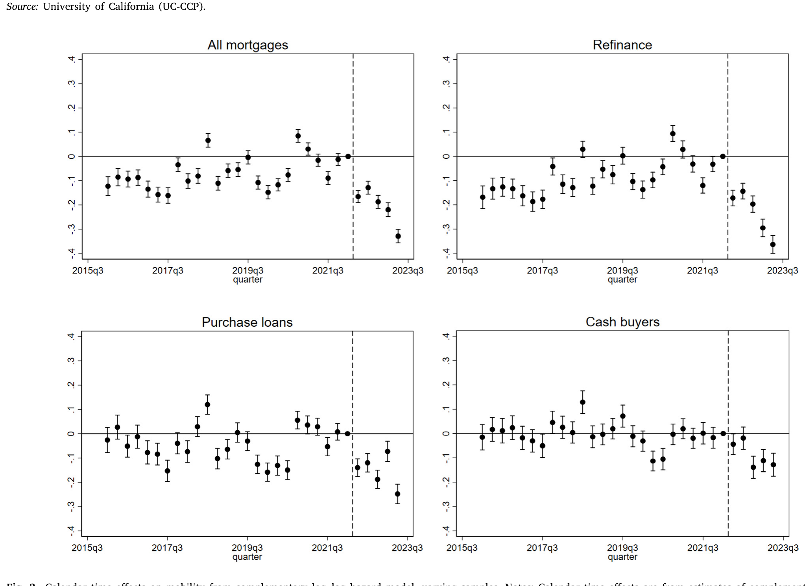
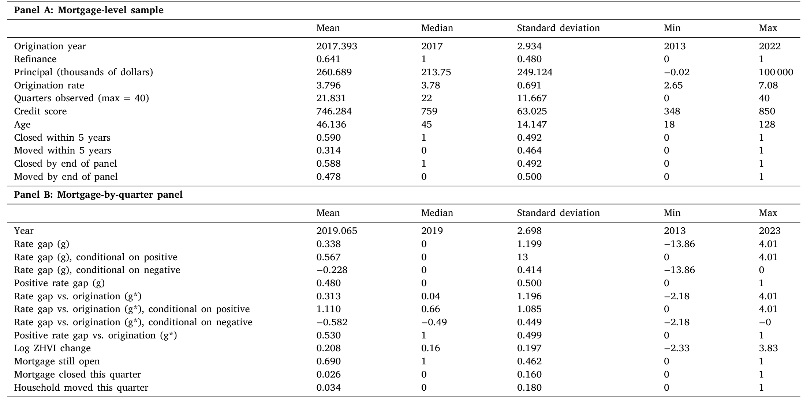
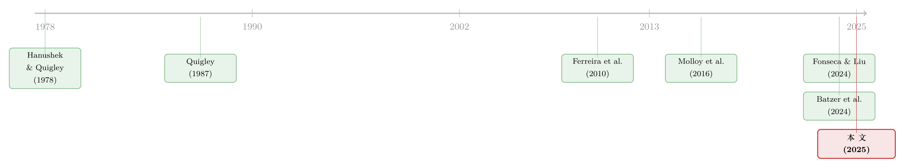

被自己 3% 的房贷「锁」在原地：当利率掉头向上，美国人为什么不搬家了
本文读的是 Liebersohn & Rothstein (2025, Journal of Financial Economics)：当市场利率在 2022–2023 年急速上行时，那些手握低息固定利率房贷的美国家庭被「锁」在了原地——市场利率每比原始贷款利率高出一个百分点，季度搬家概率就下降 7.7%；在样本最后一年，利率锁定让有按揭家庭的跨邮区流动率从 7.3% 降到 6.1%（降幅 16%），少搬了约 80 万次家，并造成约 200 亿美元的无谓损失。
1 一个本不该存在的「悬念」
先讲一个具体的人。
一位房主在 2016 年办了一笔固定利率房贷，利率 3.5%——那一年很典型的利率，到 2023 年她还欠着 $200,000。这时候，生活里发生了一些变化，让她很想换一套房子；房子价值不变，她的信用分也极好，银行非常乐意按当时 7% 的市场利率给她放一笔新贷款。问题是：仅仅因为利率从 3.5% 跳到了 7%，她的月供会上升 38%，在剩余贷款年限里累计要多付超过 $110,000。
而这笔钱，她只要不搬家，就一分都不用付。
这就是这篇论文要讲的核心——「利率锁定」(mortgage rate lock，又称 housing lock)。美国主流的 30 年期、固定利率、不可转让 (non-assumable) 的房贷，其实是一种很奇怪的金融工具：因为没有提前还款罚金，借款人可以在利率下行时再融资 (refinance) 去吃到更低的利率；可一旦利率上行，只要人不动，旧的低利率就一直锁在那里。换句话说，这个利率在实践中是可调的，但只能向下调。它对借款人是一种保护，却也悄悄埋下了一道反向的搬家阻力。
把房贷想成一张债券：你借钱买房，等于「做空」了一张债券。利率上行时债券价格下跌，做空者获利——所以利率上行其实给了借款人一笔账面收益（旧贷款变「便宜」了）。但要兑现这笔收益，唯一的办法就是继续持有旧贷款，也就是不搬家。
接着，一个自然的问题是：这道阻力到底有多大？
过去四十年它几乎无关紧要——从 1980 年代初到新冠疫情，美国利率是一条长期下行的曲线，没人会因为「换房要换一个更高的利率」而犯难。可 2022 年的故事完全不同：从 2021 年 12 月到 2022 年 11 月，平均房贷利率从 3.10% 一路冲到 6.95%，接近四个百分点的涨幅；随后继续爬升，在 2023 年 10 月触顶 7.79%，是 2001 年以来的最高位。这一次急涨，几乎把所有在低利率时期（2009–2020）办过或再融资过房贷的人，都瞬间「锁」住了。
于是这道四十年来的「死规则」第一次有了真实的经验意义，也第一次提供了一个干净的自然实验：利率的这条路径，对所有人是同一个外生冲击，而每个家庭被锁的程度，取决于他当初锁定的利率有多低。
2 真正难的一步：怎么把「锁定」从「人本身」里剥出来
衡量利率锁定，最朴素的做法是比较「手里贷款利率高的人」和「利率低的人」搬不搬家。但作者在引言里就把这条路堵死了——一笔在贷贷款的利率包含两个都可能内生的成分：
- 它在什么时候被办的（origination date）——这取决于你上一次再融资的时机，而再融资的时机本身可能和你的搬家计划相关：一个短期内打算搬家的人，往往不愿意付再融资的固定成本，哪怕能拿到更低利率；
- 你相对市场的利率有多低（relative rate）——这反映了你的信用资质等，而信用资质又可能直接和搬家倾向相关。
所以，真正关键的一步，是只用利率随时间变动这一外生来源来识别效应，而不是用「不同人之间贷款利率的横截面差异」。作者的做法分两层。
第一层，工具变量 (instrumental variables, IV)。 他们用一笔贷款最初办理时（在任何后续再融资之前）的市场利率，作为当前房贷利率的工具变量，同时加入「办理日期固定效应」(origination date fixed effects)。这样一来，利率缺口的效应就只来自办理之后利率所走的那条路径——也就是那个自然实验——而不来自信用分差异，也不来自办理日期本身可能携带的搬家倾向。
作者特意指出，同期的 Fonseca and Liu (2024) 也用「办理时的市场利率」做工具变量来回避信用分内生，但没有处理办理日期的内生，而且他们放了日历年固定效应，把市场利率的大部分变动都吸收掉了——结果他们的识别主要来自「距办理的时间」。Batzer et al. (2024) 的偏好设定则主要利用同一时点不同贷款的利率差异。这两者恰恰用上了本文视为「可能内生」的两类变异。
第二层，差分式风险 (difference-in-hazard)。 这是全文最聪明的一手。作者另外构造了一组没有房贷的房主——他们用现金买房，称之为「现金买家」(cash buyers)。这群人同样身处涨利率的房市，会受到房价、宏观经济等一般均衡效应的影响，唯独不受利率锁定影响。于是把「有按揭者的流动率变化」减去「现金买家的流动率变化」，共同的时间效应被差掉，剩下的差额就干净地归因于利率锁定。
为什么用现金买家而不是租客？作者明说了：他们发现租客在加息前的流动趋势和按揭持有人并不平行，而非按揭房主的趋势是平行的——所以选了后者。这也解释了为什么事件研究 (event study) 的图很重要：高频的季度数据让他们能画出加息前的平行趋势、并看清流动率对利率冲击的响应时点。

Figure 3: Calendar time effects on mobility from complementary log–log hazard model, varying samples. Notes: Calendar time effects are from estimates
如图 3 所示，把不同样本叠在一起看，有按揭者的日历时间流动率效应在 2022 年之后明显向下，而对照组要平缓得多——这正是「差分式风险」要抓的那块差额。
3 为什么是风险模型，而不是线性概率模型
这里值得停一下。作者刻意没有用其他文献常用的线性概率模型 (linear probability model, LPM)，而是用了带非参数基准风险 (nonparametric baseline hazard) 的离散时间风险模型 (discrete-time hazard model)。原因很实在：
本文的核心处理变量——「市场利率高于你的存量利率」——是强烈序列相关的。一旦某个家庭在某一季度被劝退、没搬，这就改变了下一季度在贷贷款的「久期构成」：因为短居住年限的人搬家率本来就高得多，被劝退者留在样本里，会直接压低下一季度的整体流动率。普通 LPM 处理不好这种依赖，而带久期非参数控制的风险模型恰好为此而生。它还让作者能够把多个季度的高利率效应累加起来计算累计效应，而不至于重复计数——这对后面算总福利损失至关重要。
4 模型与推导：从「换贷成本」到「风险函数」
这篇论文不是结构模型，但它有一套清晰的激励框架和一个明确的估计方程，值得一步步拆开。
4.1 换一笔贷款，到底要多付多少现值
考虑一个房主，存量贷款年利率为 \(R_0\)，剩余本金 \(P\)，剩余 \(m\) 期月供。他想搬到一套等值的房子，把剩余权益全部转成首付，于是需要按新利率 \(R_1\) 办一笔同样本金 \(P\)、同样剩余期数 \(m\) 的新贷款。
第一步，用标准的等额本息摊还公式，写出「每一元本金对应的月供」这个函数：
$$f(R) \equiv \frac{R/12}{1-(1+R/12)^{-m}}$$
于是旧贷款的月供是 \(P\cdot f(R_0)\)，新贷款的月供是 \(P\cdot f(R_1)\)。注意 \(f(\cdot)\) 关于 \(R\) 递增，所以只要 \(R_1>R_0\)，新月供一定更高。
第二步，把「未来每期多付的月供」用贴现率 \(\delta\) 折算成现值。换掉旧贷款、背上新贷款的成本现值是：
代入数字就能感受到这道楔子有多重：当 \(R_0=3.5\%\)、\(R_1=7\%\)、\(\delta=7\%\) 时，未来月供的现值会上升 38%。这就是文章开头那位房主面对的 $110,000（现值约 $55,000）。
在个体贷款层面，作者把这笔锁定成本写成只取正的部分（市场利率低于存量利率时不构成锁定）：
$$\max\Big\{0,\; P\big(f(R_1)-f(R_0)\big)\Big\}$$
把它在所有在贷贷款上对 \(P\)、\(R_0\)、\(m\) 求平均，就得到了 Fig. 1 右图那条「平均月供缺口」曲线——到 2023 年，平均房主若按当时利率重办贷款，月供要多出超过 $400。
4.2 把搬家写成一个风险函数
接下来是估计方程。令 \(Y_i\) 表示从办理贷款到搬出邮区所经历的时长（以季度计），永不搬家则 \(Y_i=\infty\)。生存函数 (survival function) 设为如下比例风险形式：
$$S(t\mid X_i)\equiv \Pr(Y_i\ge t\mid X_i)=S_0(t)\exp(X_i\beta)\tag{1}$$
这里 \(S_0(t)\) 是基准生存函数，用非参数方式刻画「居住年限」本身对搬家的影响（短居住年限的人搬家率高，这条曲线把它吃掉）；\(X_i\) 是单元 \(i\) 的特征，其中最关键的就是利率缺口。\(\exp(X_i\beta)\) 则是特征对基准风险的比例式平移。
这套设定的好处前面已经说过：它天然处理久期构成随时间演化带来的序列相关，又能干净地把多季效应累加，从而算出反事实的逐季总流动率与总福利损失。
5 主要结果：被锁住的 16%
把上面这套框架跑下来，结论相当锋利：
其一，弹性级别的锁定效应。 当前市场利率每比借款人的原始利率高出一个百分点，季度搬家概率就下降 7.7%。
其二，总量上的冲击。 在 2022q3–2023q2（数据覆盖的最后一年），利率锁定让有按揭家庭的跨邮区流动率从 7.3% 降到 6.1%，降幅 16%；折算成绝对数，这一年里被劝退的搬家约有 80 万次。而对没有房贷的房主，同期流动率的变化要小得多——这正是「差分式风险」识别出的纯锁定效应。跨州流动 (inter-state) 受到的影响约为跨邮区的一半。
其三，强烈的非线性与门槛。 在允许利率缺口产生非线性效应的设定里，作者发现缺口在大约 1.5 个百分点以内时效应非常小；真正咬人是缺口拉大之后。而 2022 年之前，缺口大于约 1 个百分点的观测寥寥无几——于是模型自然推出一个结论：2022 年之前利率锁定几乎没有实质影响，这一点在把样本限制到 2022 年前时得到了印证。也正因如此，本文有趣地与早期文献分道扬镳：他们几乎找不到「负缺口」（市场利率低于存量利率）显著影响搬家的证据——大的负缺口只会促成再融资，而不改变搬不搬家。

Table 1: presents summary statistics for the main analysis sample
如表 1 所示，这是主分析样本的描述性统计，给出了样本期内有按揭与无按揭房主的基本画像，也是上述风险模型的输入。
其四，福利账本。 作者把账算得很细：
- 那些「明知被锁、仍然搬了家」的人，平均每年要为新贷款多付近 $5,000，折成现值，每笔贷款约 $49,000——这是一笔从家庭流向银行体系的纯转移（若房贷可随人转让本可省下），全体搬家家庭合计约 $215bn；
- 而那些因此放弃搬家的人，构成了真正的无谓损失 (deadweight loss)：在最后一年约 $20bn，平摊到每个有按揭家庭约 $296。
这两笔账性质不同：$215bn 是转移（有人受损、有人受益，社会净额为零附近），$20bn 才是被毁掉的、谁也没拿到的效率。把两者混为一谈，会大大高估或低估利率锁定的社会成本。
这些效应还有宏观含义：自 2021 年以来归因于利率锁定的流动率下降，让美国本已长期走低的「人口流动性」(fluidity) 又被提前透支了大约一年的降幅。正如 Molloy et al. (2016) 早就警告的，搬家成本上升、流动性下降，会给劳动力流向工作机会、给经济从衰退中复苏带来实实在在的摩擦。（关于「被锁在低机会的地方」这件事对家庭的长期代价，可参见《买不起的，其实不是房子，而是机会》。）
6 文献脉络
这条研究线其实很老。最早是 Hanushek and Quigley (1978) 与 Venti and Wise (1984) 建立的城市内家庭迁居模型，把搬家当成一个有交易成本、有失衡 (disequilibrium) 的决策。在此基础上，Quigley (1987, 2002) 第一次系统研究了 1980 年代到 1990 年代的「利率锁定」——当存量利率低于市场利率时，房主搬家概率下降。接着，Ferreira, Gyourko and Tracy (2010, 2011) 在 2000 年代的数据里找到了显著的利率锁定效应，同时也揭示了负资产 (negative equity) 这条不同的锁定渠道——一大批后续工作（Andersson and Mayock, 2014；Bernstein and Struyven, 2022；Foote, 2016；Brown et al., 2019）都在研究「房子卖了也还不清贷款」时的搬家阻力，这与本文研究的利率渠道是两回事。

然后，2022 年的史诗级加息把这条沉睡多年的渠道重新激活。本文并不是唯一研究这一轮锁定的论文：Fonseca and Liu (2024) 用了和本文类似的信用数据，Batzer et al. (2024) 则用房屋成交数据。但真正关键的一步在于识别——本文把锁定效应严格限定在「利率随时间变动」这一外生来源上（办理日期固定效应 + 以最初办理时市场利率为工具变量），并用「有按揭 vs 现金买家」的差分式风险吸收一般均衡效应，再配上一个带非参数久期控制的风险框架。这套组合，正是它相对同期工作的比较优势所在。
值得一提，本文「拿不受处理影响的人群作对照」的策略，本身就有传统：Aladangady (2017)、Atalay and Edwards (2022) 研究住房财富效应，Chaney et al. (2012) 研究抵押品渠道对企业投资的影响，都用过类似的思路。
7 评论与延伸（Q&A + 研究方向）
(a) 几个可能的疑问
Q：利率锁定和「负资产锁定」是一回事吗？
不是，而且本文刻意把两者分开。负资产锁定是「房子市值低于贷款余额，卖了也还不清，于是搬不动」（Ferreira et al., 2010 等研究的渠道）；本文研究的是「旧贷款利率太低、换贷要多付钱，于是不想搬」。在 2022–2023 这一轮，房价并没有大幅下跌，所以负资产渠道不强，本文还额外灵活控制了本地房价变化，进一步把利率渠道分离出来。
Q：现金买家真的是好对照吗？凭什么说他们「不受锁定影响」？
现金买家身处同一片房市，房价、宏观需求等一般均衡冲击对他们和按揭持有人是共同的，会被「差分式风险」里的共同时间效应差掉；但他们没有低息房贷，所以不存在「换贷多付钱」这道楔子。作者还检验过：他们的加息前流动趋势与按揭持有人平行，而租客不平行——这正是选现金买家、弃租客的理由。
Q：那 7.7% 这个数字大不大？
作者把它翻译成弹性来检验合理性：它对应的邮区流动率相对净收入的弹性约在 3–4 之间，跨州流动约在 1–2 之间，与 Fajgelbaum et al. (2019) 综述里的其他估计大体一致——说明量级是可信的，不是离谱的大。
Q：为什么强调「2022 年之前几乎没影响」？这不是削弱了利率锁定的重要性吗？
恰恰相反，这是本文的一个反直觉亮点。因为效应高度非线性——利率缺口要超过约 1.5 个百分点才真正咬人，而这种大缺口在 2022 年前几乎不存在。所以利率锁定不是一直都重要，而是只有在利率急涨、大量人被甩出低利率区间时才变成宏观级别的问题。这也提醒我们：用 2022 年前数据估出的「小效应」，不能简单外推到加息期。
Q：$215bn 和 $20bn 这两个数，为什么差一个量级？
因为前者是转移、后者是效率损失。
$215bn是「搬了家的人」多付给银行的钱（现值，每笔约$49,000），社会层面一方得一方失；$20bn是「本想搬却被劝退的人」放弃的福利，是真正凭空消失的效率。后者才是经济学意义上的「成本」。
Q：那受害的只有家庭吗？银行呢？
银行有得有失。一方面，被锁住的人少搬家，意味着低息贷款在最不利于银行的时点（高利率期）反而更不容易被提前还清，这加剧了「利率变动与还款时点」的不对称（Bolhuis et al., 2024 讨论过相关的资金成本问题）；另一方面，那些「明知被锁仍搬家」的人，又给银行送上了
$215bn的利息转移。净效应取决于两股力量的对比。
(b) 几个可能的研究问题与提案
1. 把利率锁定接到劳动力错配上。 【经济故事】本文算的是「少搬了 80 万次家」，但没有直接量化「该去高生产率地区却没去」造成的产出损失。如果能把被劝退的搬家按「目的地工资/生产率」加权，就能估出利率锁定的空间错配成本，把 Fajgelbaum et al. (2019) 那套框架接进来。【可行性】中。需要把信用数据与地区工资/职位数据（如 LEHD、招聘数据）匹配，识别上可沿用本文的差分式风险，难点在于反事实目的地的构造。
2. 利率锁定对信用市场的外溢：被「困住」的不只是人，还有抵押品。 【经济故事】被锁住的房子长期不流通，会压低成交量、扭曲本地按揭定价，甚至影响 MBS 的久期与做市。本文点到了银行端的不对称，但没展开到证券化市场。【可行性】中到高。Fannie Mae 贷款层面数据 + 二级市场利差，可做事件研究式分析。（与抵押品定价相关的讨论，可参见《房子越「难定价」，越借不到钱》。）
3. 可转让房贷 (assumable mortgage) 的反事实实验。 【经济故事】本文的福利损失全部相对于「房贷可随人转让」这一反事实来定义。FHA 和 VA 贷款在严格条件下其实可转让。若这类贷款在 2022–2023 的搬家率显著高于条件相近的常规贷款，就能直接验证「可转让性」缓解锁定的因果效应。【可行性】高。数据上可识别 FHA/VA vs 常规贷款，识别可用断点或匹配差分。诚实地说，难点是 FHA/VA 借款人画像不同，需要小心控制。
4. 把「利率锁定」搬到公司信用市场。 【经济故事】企业也大量持有固定利率债务。当利率急涨，发了低息债的公司是否会推迟本该进行的并购、资产剥离或重组——一种公司版的「锁定」？机制和本文同源：旧债太便宜，动起来要换贵债。【可行性】中。Compustat + 债券层面数据可构造企业的「债务利率缺口」，识别上可借鉴本文的 IV（以发债时市场利率为工具）。
5. 锁定效应的分配维度：谁被锁得最紧？ 【经济故事】本文已发现「近期再融资过的人效应最大」，并探讨了种族、收入、地区异质性。一个自然延伸是把它接到再融资行为本身的不平等上——Gerardi, Willen and Zhang (2023) 发现再融资倾向存在种族差异，那么利率锁定会不会反向放大或缩小这种差异？【可行性】高。本文数据已含相关维度，主要是把异质性分析做深。
8 我的判断
这篇论文的贡献，不在于「发现」利率锁定——这个概念 Quigley 在 1980 年代就写过——而在于抓住了一个四十年一遇的干净冲击，并用一套配得上这个冲击的方法把它量化到位。三处我尤其欣赏：用「最初办理时的市场利率 + 办理日期固定效应」把识别严格收敛到利率路径这一外生来源；用「现金买家」这个别人没用过的对照组做差分式风险；以及坚持用带非参数久期控制的风险模型，从而能干净地累加多季效应、算出可信的总福利账。16%、80 万次、$20bn 这些数字，因此是站得住的。
对识别，我有两点保留。其一，现金买家与按揭持有人在加息前趋势平行，不等于在加息这一冲击下反应也只差一个利率锁定——若两群人对宏观不确定性、信贷可得性的敏感度本就不同，差分仍可能残留偏误，作者的平行趋势检验只能部分缓解。其二，样本只到 2023q2，高利率才持续不到三年，长期效应（人们最终会不会「忍无可忍」而搬、会不会出现新的金融工具来对冲）尚无法观察——$20bn 是一个短期快照，不宜直接年化成永久成本。
后续我最想看到的，是把这套「被锁住的流动性」接到真实的经济后果上：被劝退的搬家里，有多少本该流向高生产率城市、高薪岗位？利率锁定压低的成交量，又如何回头改变了本地的按揭定价与证券化市场？把家庭端的摩擦一路追到劳动力错配和信用市场，这道账才算真正算完。
参考文献
- Aladangady, A. (2017). Housing wealth and consumption: evidence from geographically linked microdata. American Economic Review 107(11), 3415–3446.
- Andersson, F., & Mayock, T. (2014). How does home equity affect mobility? Journal of Urban Economics 84, 23–39.
- Atalay, K., & Edwards, R. (2022). House prices, housing wealth and financial well-being. Journal of Urban Economics 129, 103438.
- Batzer, R., Coste, J., Doerner, W., & Seiler, M. (2024). The Lock-In Effect of Rising Mortgage Rates. FHFA Staff Working Paper Series.
- Bernstein, A., & Struyven, D. (2022). Housing lock: Dutch evidence on the impact of negative home equity on household mobility. American Economic Journal: Economic Policy 14(3), 1–32.
- Bolhuis, M. A., Cramer, J. N. L., Schulz, K. O., & Summers, L. H. (2024). The Cost of Money is Part of the Cost of Living: New Evidence on the Consumer Sentiment Anomaly. NBER Working Paper 32163.
- Brown, J. R., Cookson, J. A., & Heimer, R. Z. (2019). Growing up without finance. Journal of Financial Economics 134(3), 591–616.
- Chaney, T., Sraer, D., & Thesmar, D. (2012). The collateral channel: How real estate shocks affect corporate investment. American Economic Review 102(6), 2381–2409.
- Fajgelbaum, P. D., Morales, E., Suárez Serrato, J. C., & Zidar, O. (2019). State taxes and spatial misallocation. Review of Economic Studies 86(1), 333–376.
- Ferreira, F., Gyourko, J., & Tracy, J. (2010). Housing busts and household mobility. Journal of Urban Economics 68(1), 34–45.
- Ferreira, F., Gyourko, J., & Tracy, J. (2011). Housing Busts and Household Mobility: An Update. NBER Working Paper 17405.
- Fonseca, J., & Liu, L. (2024). Mortgage Lock-In, Mobility, and Labor Reallocation. Working Paper.
- Foote, A. (2016). The effects of negative house price changes on migration: Evidence across US housing downturns. Regional Science and Urban Economics 60, 292–299.
- Gerardi, K., Willen, P. S., & Zhang, D. H. (2023). Mortgage prepayment, race, and monetary policy. Journal of Financial Economics 147(3), 498–524.
- Hanushek, E. A., & Quigley, J. M. (1978). An explicit model of intra-metropolitan mobility. Land Economics 54(4), 411–429.
- Liebersohn, J., & Rothstein, J. (2025). Household mobility and mortgage rate lock. Journal of Financial Economics 164, 103973.
- Molloy, R., Trezzi, R., Smith, C. L., & Wozniak, A. (2016). Understanding declining fluidity in the US labor market. Brookings Papers on Economic Activity 2016(1), 183–259.
- Quigley, J. M. (1987). Interest rate variations, mortgage prepayments and household mobility. Review of Economics and Statistics, 636–643.
- Quigley, J. M. (2002). Homeowner mobility and mortgage interest rates: new evidence from the 1990s. Real Estate Economics 30(3), 345–365.
- Venti, S. F., & Wise, D. A. (1984). Moving and housing expenditure: transaction costs and disequilibrium. Journal of Public Economics 23(1–2), 207–243.